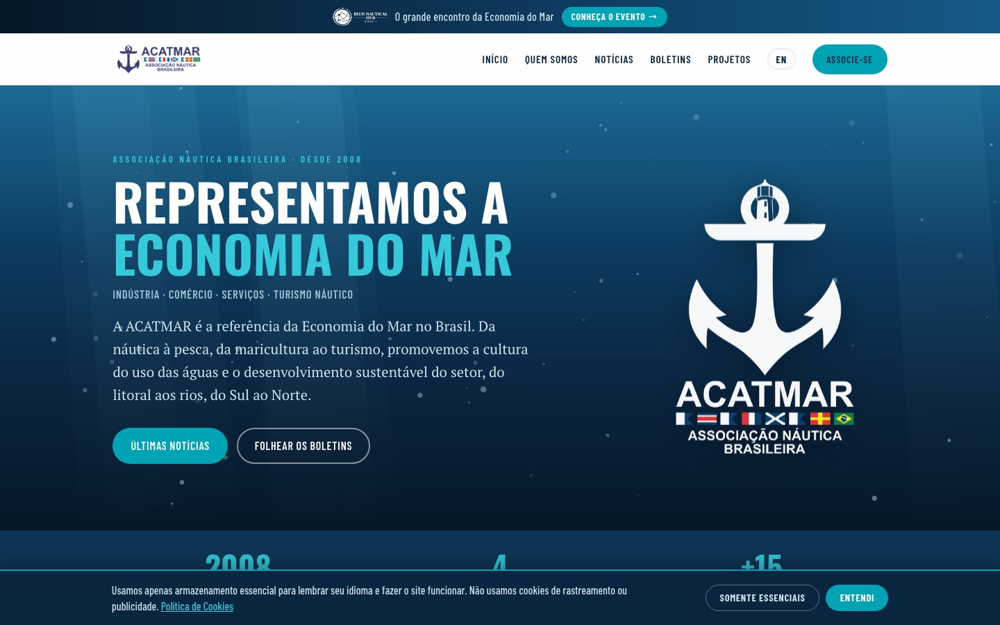

Reunião ACATMAR
Iate Clube Veleiros da Ilha — Sede Centro · Florianópolis/SC
Pauta da reunião
Bem-vindos, novos associados
Apresentação e integração das empresas que passam a fazer parte da ACATMAR, fortalecendo a rede de relacionamento e as oportunidades de negócios do setor.
- Cada associado se apresenta: empresa, atuação e o que busca na associação
- Conexões diretas com quem já está na rede
O novo site da ACATMAR
- Notícias do setor, projetos e boletins digitais
- Versão em inglês para alcance internacional
- Pronto para celular e otimizado para o Google

Nova plataforma de cadastro
A ficha de associação agora é preenchida online, no próprio site, com muito mais agilidade e segurança.
Basta digitar o CEP e o endereço é preenchido sozinho.
Registro de quem preencheu, com nome, CPF, data e hora.
Cada cadastro chega em PDF, pronto para o nosso arquivo.
Boletim Informativo
1º Semestre de 2026
Ações, conquistas e resultados institucionais do semestre, agora em formato digital folheável, acessível de qualquer aparelho.
- Blue Nautical HUB Brasil · 240 mil empregos em SC · Limpeza dos Mares
- Todas as edições desde 2024 disponíveis no site
Utilidade Pública Federal
A ACATMAR já é Entidade de Utilidade Pública Municipal de Florianópolis (Lei nº 10.711/2020). O próximo passo é o reconhecimento federal.
- Apresentação da pauta e dos objetivos
- Encaminhamentos e responsáveis
Documento da Economia do Mar
Elaboração de um documento técnico com as principais demandas do setor náutico, para entregar a candidatos a deputado, ao Senado, ao Governo e às lideranças políticas que têm procurado a ACATMAR.
- O setor falando com uma só voz
- Contribuição de todos os associados
Ações do 2º semestre de 2026
VI edição, com programação ampliada.
Agenda nacional e internacional.
Resultados de 2026 e preparação de 2027.
- Articulação política e Documento da Economia do Mar
- Projetos estruturantes e novos associados
Agenda de visitas técnicas
Programação do segundo semestre, oportunidades de participação e critérios de adesão.
- Missões que aproximam os associados dos mercados mais desenvolvidos
- Condições subsidiadas por meio de acordos institucionais
- Mais de 150 associados já participaram dessas agendas
VI Fórum Técnico ACATMAR 2026
Um dia de imersão total em conhecimento aplicado às diversas áreas da cadeia produtiva do setor náutico.
Cinco edições já realizadas.
Especialistas do setor.
Aberto a todo o setor.
- Formato, programação inicial, local, parcerias e oportunidades para os associados
Blue Nautical HUB 2026 e 2027
Nacionais e internacionais.
Em apenas 6 horas.
Resultado da 1ª edição.
- Novo formato e programação preliminar para 2027
- Oportunidades e formas de adesão para os associados
Molhes do Rio Biguaçu
Envio de ofício ao Município de Biguaçu solicitando informações sobre o andamento do projeto apresentado na última reunião da ACATMAR.
- Navegabilidade, combate ao assoreamento e resiliência climática
- Potencial para um grande polo de refit, manutenção e marinas
Espaço dos associados
Manifestações, sugestões e assuntos gerais. É o momento de ouvir quem faz o setor acontecer todos os dias.
É sobre conectar soluções e oportunidades.”
Mais de 10 anos conectando mercados, pessoas e oportunidades nos segmentos náutico, offshore e industrial.
Jantar e networking
Ao final da programação, jantar de confraternização e momento de networking entre os associados.
- Obrigado pela presença e pela construção coletiva do setor
Juntos, somos mais fortes
+55 48 99971-5761 · acatmarpresidencia@gmail.com